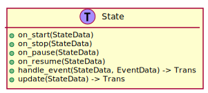
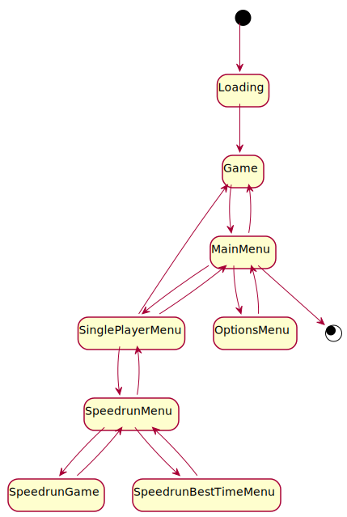

6.2. Game States¶
A game state is a general and global part of the game. The active state is updated every game loop, has access to the world’s entities and resources, and can receive events. States can also request a transition to a different state.
6.2.1. State Trait¶
In Amethyst states implement the State trait. A summary of the State trait is shown in Figure 6.2.

Figure 6.2 Notable methods provided by the State trait.¶
Each method is provided a StateData structure that provide’s access to the
world’s entities and resources. Additionally, handle_event() is provided an
EventData enum, shown in Figure 6.3, that aggregates the
different types of events available to the states.

Figure 6.3 Event data available to states.¶
The window, UI, and input events are generated by various Amethyst subsystems. The remaining variants hold custom events generated by the game that states wish wish to receive.
6.2.2. State Diagram¶
The state diagram in Figure 6.4 shows each state and their state transitions. 1

Figure 6.4 State diagram for the game states.¶
6.2.3. Game State¶
The game state is used for Single-player Mode and Two Player Mode games. The responsibilities of this state are:
Spawn the player and AI opponent entities for playing the game.
Handle player events for when marks are placed.
Manage the game resource.
Show the game environment with the Environments Resource.
Show the Game Board widgets including the menu button and status text.
Navigate to the main menu state.
When the game state is started, the options to use are provided. This includes if the game is single-player or multiplayer. For single-player, this is the difficulty level and if the player is using X or O marks.
6.2.4. Speedrun Game State¶
The speedrun game state is used for Speedrun Mode games. 2 The responsibilities of this state are:
Spawn the player and AI opponent entities for playing the game.
Handle player events for when marks are placed.
Manage the game resource.
Keep track of the total speedrun time and time for each game.
Show the Speedrun widgets including the menu button and status text.
Navigate to the best time menu state providing the results of the speedrun. The results include a successful game along with the run’s time, a lost game, or an aborted game from the player opening the menu.
6.2.5. Loading State¶
The loading state is the first state run when the game starts. The responsibilities are:
Show the Loading Screen widgets.
Queue the resources to load with asset loader.
Monitor and optionally report the loading progress.
Launch the game state when resource loading is complete. The single player game options last used are provided. 3
The loading state asks the Environments Resource and any other resources to queue the assets that need loaded. It then monitors the loading progress and transitions to the game state when complete.